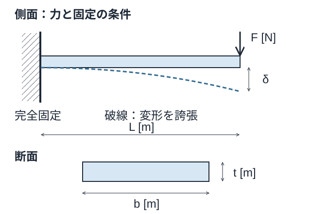
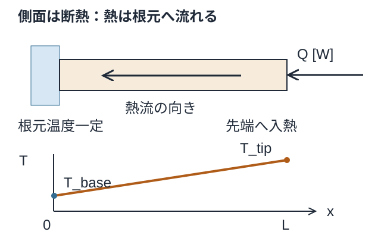
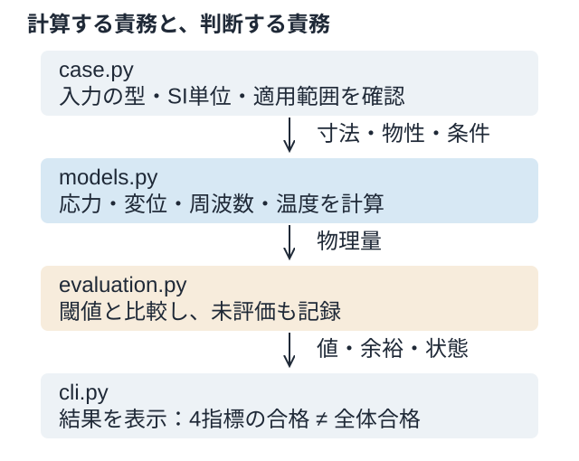

公称曲げ応力
σ = FL(t/2) / I = 6FL / (bt²)
根元の曲げモーメント FL と、最外縁までの距離 t/2 から計算。単位は Pa。穴や締結部の局所ピークは表しません。
MECHANICAL DESIGN STUDY · LESSON 01
加熱される片持ち支持板で、前提を置く → 計算する → 条件と比べるを一周する。
倍率を予想する力から、モデルの適用範囲とソフトウェアの仕組みを説明する力へ。図を読み、寸法を変え、最後に自分の説明と実行結果で確認します。
学習用の解析解モデルです。実機の妥当性・寿命・EMC適合は未検証。図と資料はAI支援で作成しています。
01 / 境界条件

力 F [N] と質量 m [kg] は別の入力。
実物のおもりは荷重と慣性の両方を持ちます。現在の F を変えても、振動モデルへ質量が追加されるわけではありません。

Q [W] は単位時間当たりの熱。熱量 [J] や熱流束 [W/m²] とは区別します。
入れた熱の逃げ先をなくすと、現在の定常温度式は使えません。
| 量 | 値 | 単位と意味 |
|---|---|---|
| L / b / t | 0.10 / 0.03 / 0.003 | m：長さ / 幅 / 厚み |
| E | 70 × 10⁹ | Pa：ヤング率 |
| ρ | 2700 | kg/m³：密度 |
| k | 167 | W/(m·K)：熱伝導率 |
| F / Q | 1 / 1 | N：横荷重 / W：供給熱 |
02 / 式と意味
A = bt [m²] I = bt³ / 12 [m⁴] m = ρAL [kg]
曲げ剛性は EI [N·m²]。中立軸から遠い材料ほど断面二次モーメント I に寄与します。面積 A と I は別の量です。
σ = FL(t/2) / I = 6FL / (bt²)
根元の曲げモーメント FL と、最外縁までの距離 t/2 から計算。単位は Pa。穴や締結部の局所ピークは表しません。
δ = FL³ / (3EI)
EI w″ = F(L−x) を、固定端の変位・回転ゼロで積分。単位は m。応力が合格でも、隙間や位置精度の要求に違反する場合があります。
f₁ = 1.875104² / (2πL²) × √(EI / ρA)
単位は Hz。固定・自由の境界条件を持つ、付加質量なしの梁の式。固有振動数だけでは振動の大きさや疲労寿命は決まりません。
T_tip = T_base + QL / (kA)
単位は K。熱抵抗 L/(kA) [K/W] に供給熱 [W] を掛けると温度差。板厚2倍で半分になるのは 温度上昇です。
幅2倍では剛性と質量が同じ倍率で増え、周波数は不変。厚み2倍では剛性8倍・質量2倍なので、周波数は2倍になります。いずれも今回の条件での関係です。
03 / 検証と妥当性
04 / 設計変更の比較
長さ・材料・静荷重・入熱・閾値を固定します。表示するのはPythonの評価器で計算した36通りの結果。3 mm・幅30 mmを基準に比べます。
データを読み込んでいます。
どの設定でも9分野が未評価です。必須制約は重み付き得点で相殺しません。
共通軸は0〜8倍。縦線が基準の1倍。温度の倍率は絶対温度でなく温度上昇を比較。
| 指標 | 基準 | 選択 | 条件 | 判定 |
|---|
.\run.cmd cases\heated_cantilever.toml
.\run.cmd cases\heated_cantilever_2mm.toml2 mmケースではたわみと周波数が違反し、終了コード2になります。ブラウザを操作したこととCLIの再現は、それぞれ別に確認します。
05 / 統合する仕組み

case.py に必要な入力を定義。models.py または新しいモデルモジュールに計算を実装。evaluation.py で値・単位・閾値・余裕・方法・状態を登録。例えば疲労データがないときは、損傷ゼロで合格にせず、未評価として理由を残します。
現在は共通の寸法で各計算を実行しています。温度を弾性率や熱応力へ戻しておらず、熱構造連成ではありません。
| 状態 | 意味 |
|---|---|
| pass | この指標・条件で合格 |
| fail | 制約違反 |
| not_evaluated | モデルやデータがなく未評価 |
| not_applicable | 理由付きの対象外。初版では未使用 |
| error | 計算で有限値を得られない等のエラー |
総合判定はエラー → 違反 → 未完了 → 合格の順。3 mmケースの4指標が合格でも、9分野が未評価なので総合は未完了です。
06 / 確認
講義本文を参照して構いません。対話では一問ずつ、理由を含めて確認します。
4つの指標について、式・入力・出力単位・成立条件を説明してください。先端にセンサー質量を付けた場合と、根元まで断熱にした場合、現在の式で何が不足しますか。
テスト成功、計算約247 Hz、実物約190 Hzだったとします。バグと断定できますか。調べる要因を2つ、確認方法を1つ挙げてください。190 Hzは問題用の架空値です。
CLIで3 mmと2 mmを実行し、2 mmのたわみ・周波数・閾値、採用を妨げる制約、3 mmでも全体合格にできない理由を報告してください。
疲労データと荷重履歴がない場合、どの状態を返しますか。入力・計算・判定をどのファイルへ追加するかも説明してください。
この教材は回答や個人の学習履歴を保存・送信しません。表示テーマだけをこのブラウザに保存します。
各問でいったん考え、解答例と解説を開いて確認する。対話で扱った論点を汎用の教材として再構成したもので、個人の回答・成績・実行記録ではない。解答例を読んだことと、自分で説明・実行できたことは別に確認する。
問い：厚みtを2倍にすると、質量・曲げ応力・たわみ・一次固有振動数・温度上昇はどう変わるか。
解答例：順に2倍、1/4倍、1/8倍、2倍、1/2倍。
解説：長さ・幅・材料・先端力・入熱を固定する。I=bt³/12より応力はt⁻²、たわみはt⁻³、付加質量なしの一様梁の周波数はtに比例する。温度上昇は根元温度固定・側面断熱の1D伝導モデルでの倍率で、放射冷却にはそのまま使えない。
問い：幅bを2倍にすると、同じ5指標はどう変わるか。
解答例：順に2倍、1/2倍、1/2倍、1倍、1/2倍。
解説：厚みなどを固定する。周波数の式では曲げ剛性EIと単位長さ質量ρAがともに2倍になり、比が変わらない。先端付加質量があるモデルでは、この相殺を無条件に使えない。
問い：幅と厚みのどちらを増すと、現在のモデルで周波数を上げられるか。
解答例：厚みを増す。
解説：ただし周波数だけで決めない。重量、寸法、熱の処理、製作や組立などの制約と同時に評価する。現在の計算で未評価の分野は、合格したものとして扱わない。
問い：曲げ応力σ=6FL/(bt²)の単位は何か。
解答例：Pa。
解説：分子は力×長さ、分母は長さの3乗なので、N·m/m³=N/m²=Paとなる。Nとkg、mmとmを入力で混在させない。
[σ] = [N·m]/[m³] = [N/m²] = [Pa]
問い：熱抵抗L/(kA)と、温度上昇QL/(kA)の単位は何か。
解答例：熱抵抗はK/W、温度上昇はK。
解説：kの単位はW/(m·K)、Aはm²。ここでQは熱量[J]ではなく熱流率・発熱電力[W]を表す。温度差はKと℃で同じ数値だが、放射式の温度には絶対温度を使う。
[L/(kA)] = m / ((W/(m·K))·m²) = K/W； [Q·L/(kA)] = K
問い：たわみFL³/(3EI)の単位は何か。
解答例：m。
解説：EはPa=N/m²、断面二次モーメントIはm⁴なのでEIはN·m²。したがってN·m³/(N·m²)=m。係数3は無次元。
[EI] = kg·m³/s²； [FL³/(EI)] = m
問い：f₁=β₁²√(EI/(ρA))/(2πL²)の単位は何か。
解答例：s⁻¹、すなわちHz。
解説：ρAはkg/m、EI/(ρA)はm⁴/s²。平方根を取るとm²/sで、L²で割ると1/sになる。β₁と2πは無次元で、角振動数ωと周波数fを区別する。
[EI/(ρA)] = m⁴/s²； [f₁] = (1/m²)·(m²/s) = Hz
問い：先端にセンサ質量を取り付けたとき、現在の固有振動数式をそのまま使えるか。
解答例：付加質量の影響を評価するには、そのままでは不足する。
解説：現在の解析式とM2aの梁FEMは梁自身の分布質量を扱い、先端質量は含まない。静的先端力Fを入力したことは、動的質量を追加したことにはならない。拡張では先端変位自由度の質量などを加え、取り付け剛性やセンサの回転慣性が必要かも検討する。
問い：根元への伝導を断ち、真空中で低温の周囲へ熱を逃がす場合、必要な式は何か。
解答例：熱放射による正味の熱移動を熱収支に加える。
解説：一様温度の灰色面が大きな等温黒体囲いを見ている近似では、下式を使える。εは放射率、σ_SBはStefan–Boltzmann定数、A_radは放射面積。伝導断熱だけで放射が支配的とは断定できず、空気があれば対流も調べる。周囲との形態係数や相互反射が効く場合は拡張が必要。現行CLIには未実装。
Q_rad = εσ_SB A_rad(T⁴ − T_sur⁴)； T、T_surはK
問い：温度が上がる速さを考えるには、定常熱抵抗に加えて何が必要か。
解答例：熱容量C。
解説：温度を一様とみなす集中定数モデルではC=mc_p [J/K]を使う。Cが大きいほど、同じ正味入熱に対する温度変化は遅い。内部温度差が大きい場合は、分布した熱伝導の過渡解析が必要。現行CLIの定常式は時間変化を計算しない。
C dT/dt = Q_in − Q_cond − Q_conv − Q_rad
問い：伝導・対流・正味放射のすべてで外へ熱が逃げず、正の発熱が続く場合、定常温度はあるか。
解答例：このモデルでは有限の定常温度はなく、温度が上がり続ける。
解説：定常に必要な入熱と放熱の釣合いを満たせない。CとQ_inが一定ならT=T₀+(Q_in/C)t。実物では物性変化や相変化などで単純モデルの適用限界に達する。部品と囲いの間の放射は、完全断熱な系全体からの放熱とは別である。
問い：計算約247 Hz、実測約190 Hzだったとする。バグ以外に何を調べるか。
解答例：センサ取り付けによる質量負荷と、実物の固定条件の違いなど。
解説：この実測値は説明用の仮想値。センサの影響には既知の追加質量を変える比較、固定条件には締結数・締付けや接合部の変更が考えられる。変更が質量と剛性の両方に影響する点を記録し、可能なら非接触測定などで切り分ける。測定誤差と測定対象そのものの変化を区別する。
問い：たわみ0.000238095 m≤0.0001 m、周波数164.504 Hz≥200 Hzという条件は合格か。
解答例：どちらも不合格。
解説：たわみは上限を超え、周波数は下限に届かない。表示丸め前の余裕は約−0.000138095 mと−35.4956 Hz。単位の異なる余裕をそのまま足さず、各制約を判定する。
問い：板厚3 mmで評価済みの4指標が合格なら、設計全体を合格としてよいか。
解答例：よくない。疲労など9分野が未評価なので、総合はincomplete。
解説：passはその指標と条件に限る。未評価を含む通常CLIの終了コード0も、製品承認や全12分野の妥当性確認を意味しない。
問い：疲労データや荷重履歴が不足している場合、損傷ゼロを返してよいか。
解答例：よくない。not_evaluatedと、欠けている情報を返す。
解説：未評価を無損傷と扱うと、繰り返し荷重による疲労破壊を見落とす。評価した結果のfail、データ不足のnot_evaluated、計算異常のerrorを分ける。
問い：疲労評価を追加する場合、入力・計算・判定には何が必要か。
解答例：形状・物性・荷重履歴を入力し、応力／ひずみと寿命・損傷を計算して、位置ごとに判定する。
解説：入力には繰り返し回数、平均応力、環境条件、モデルに対応する材料試験データも必要。S-N/Basquin、ε-N/Coffin–Manson、累積損傷やエネルギー法は適用範囲の異なる選択肢で、必ず全部を重ねるものではない。NG箇所の表示には位置IDと局所結果を保持する。必要情報がない位置は未評価として残す。